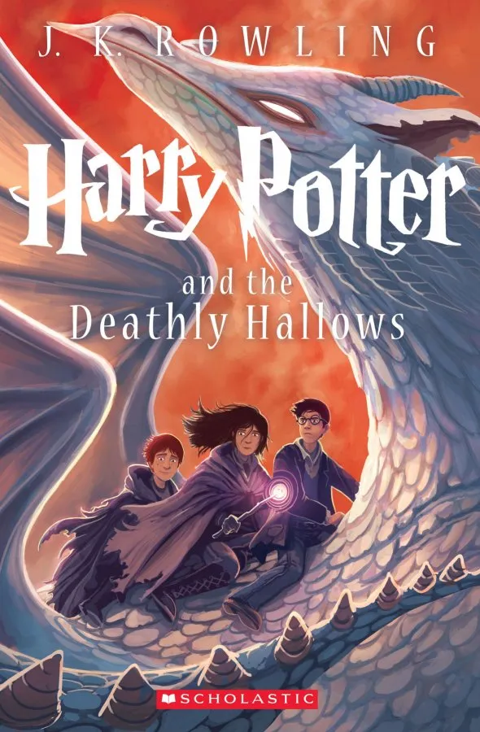

BOOK GALLERY
Harry Potter and the Philosopher’s Stone
Author : J.K.Rowling
Harry Potter and the Philosopher's Stone is a 1997 fantasy novel written by British author J. K. Rowling.
Harry Potter and the Chamber of Secrets

Author : J.K.Rowling
Harry Potter and the Chamber of Secrets is a fantasy novel written by British author J. K. Rowling and the
second novel in the Harry Potter series.
Harry Potter and the Order of the Phoenix

Author : J.K.Rowling
Harry Potter and the Order of the Phoenix is a fantasy novel written by British author J. K. Rowling and the
fifth novel in the Harry Potter series..[1]
Harry Potter and the Deathly Hallows

Author : J.K.Rowling
Harry Potter and the Deathly Hallows is a fantasy novel written by British author J. K. Rowling and the
seventh and final novel of the main Harry Potter series..
Little women
Author : Lousia M. Alcott
Little Women is a coming-of-age novel written by American novelist Louisa May Alcott, originally published
in two volumes in 1868 and 1869 at the request of her publisher.
life of pi
Author : Yann Martel
Life of Pi is a Canadian philosophical novel by Yann Martel published in 2001.
The Cat in the Hat
Author : Dr.Seuss
The Cat in the Hat is a 1957 children's book written and illustrated by the American author Theodor Geisel,
using the pen name Dr. Seuss.
To Kill a Mockingbird

Author : Harper Lee
To Kill a Mockingbird is a novel by the American author Harper Lee. It was published in 1960 and was
instantly successful.